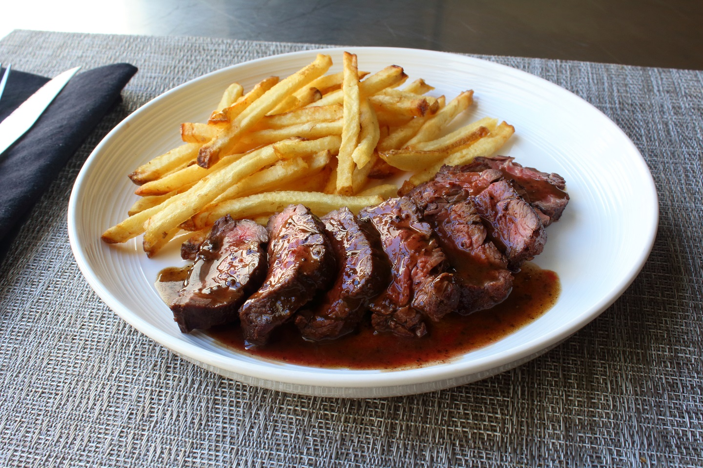

Steak

Description
How to pan-fry a steak
Seriously, though
Ingredients
- steak
- coarse salt
- grit (as in determination, not silt)
Steps
- pre-heat a thick pan to medium-high
- Salt the steaks
- Throw the burner on max and throw the steaks on. Keep the meat moving for the first minute on high or '8'.
- Drop the heat to medium and let it sizzle for 1-4 minutes depending on thickness.
- Again increase the heat. Once the pan responds, flip that steak and move it around real good on high for 1 minute. Drop the heat and cook on medium for 1-4 min.
- let cool for 5min and serve